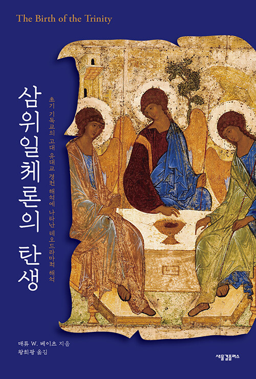
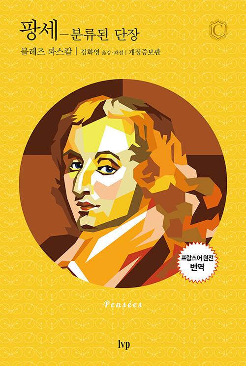
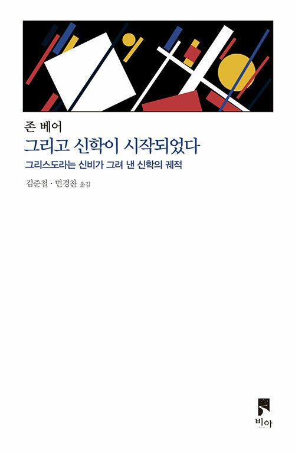

엠마오 · 이달의 책
10,000원 9,000원
코헬렛 강해·완덕·그리스도인의 생활 방식·(성) 마크리나의 생애
이달의 엠마오 대표 추천. 기획위원 다섯 명이 모두 한마디씩 보탰다 — 신비신학의 대가가 그리는 완덕을 향한 끝없는 여정, 오늘의 신학자들이 왜 이 교부에게 주목하는지 짐작하게 하는 글 모음.
— 여운송, 전원희, 민경찬, 권우진, 정다운
서평지 큐레이션 · 2026. 09
비극의 자리에서 다시 묻는 신학 — 가자, 교부의 고전, 대주교의 강연
서평지와 잡지, 출판 뉴스레터가 이달에 고른 책들을 모아 둡니다. 누가 왜 추천했는지 함께 읽고, 마음에 드는 책은 비북스에서 바로 주문하세요.
엠마오 기획위원들이 함께 고른 2권
이달의 엠마오 대표 추천. 기획위원 다섯 명이 모두 한마디씩 보탰다 — 신비신학의 대가가 그리는 완덕을 향한 끝없는 여정, 오늘의 신학자들이 왜 이 교부에게 주목하는지 짐작하게 하는 글 모음.
— 여운송, 전원희, 민경찬, 권우진, 정다운

이달의 두 번째 추천. 신앙과 삶은 분리되어 있는가 연결되어 있는가, 그리스도인의 이성적 사유란 무엇인가 — 1931년 옥스퍼드 대학생들 앞에서 한 대주교의 강연에 기획위원들이 귀를 기울인다. 교회에서 무엇을 얻을지 고민한다면 8장부터.
— 전원희, 권우진, 여운송, 권헌일
매체가 추천한 14권 · 추천이 겹친 책부터
이달의 엠마오 대표 추천. 기획위원 다섯 명이 모두 한마디씩 보탰다 — 신비신학의 대가가 그리는 완덕을 향한 끝없는 여정, 오늘의 신학자들이 왜 이 교부에게 주목하는지 짐작…
— 여운송, 전원희, 민경찬, 권우진, 정다운 외
이달의 두 번째 추천. 신앙과 삶은 분리되어 있는가 연결되어 있는가, 그리스도인의 이성적 사유란 무엇인가 — 1931년 옥스퍼드 대학생들 앞에서 한 대주교의 강연에 기획위원…
— 전원희, 권우진, 여운송, 권헌일 외

죄를 우주를 지배하는 세력으로, 십자가와 부활을 그 세력으로부터의 해방으로 읽는 로마서. 복음을 곧장 도덕으로 바꾸고 싶은 근대인에게 이 주석이 요구하는 것은 ‘공감할 수 …
— 권우진

주석서만 가득한 전도서 책들 사이에서 일반 독자가 편히 집어 들 수 있는 드문 책. ‘헤벨’에서 출발해 삶을 선물로 누리는 법, 하나님을 경외하는 자리까지 — 소비·일·성공…
— 전원희

세계 신학자 19명이 오늘 신학이 질문을 받는 자리를 가자라고 말한다. 새로운 고발 대신 신학·교회·성서 해석이 공모하고 저항하고 침묵해 온 방식을 직시하는, 불편하지만 필…
— 여운송

삶의 현상학자 앙리의 그리스도교 삼부작 마지막 권이자 유작. 그리스도의 말은 바깥에서 오는 정보가 아니라 삶이 삶 자신에게 말을 거는 방식이라는, 쉽지 않지만 삶을 다시 발…
— 여운송

1566년 초판, 약 460년 만의 한국어 완역(1504쪽). 종교개혁 이후 가톨릭이 ‘로마 가톨릭 교회’로 자기 정체성을 다시 세운 과정을 볼 때 꼭 참고해야 할 문헌.
— 여운송

“예수가 주님이다, 카이사르는 아니다”라는 익숙한 저항 서사를 비문·조각상·동전으로 다시 검증한다. 황제 숭배는 도시마다 달랐다 — 증거 없는 일반화를 묻는 책.
— 여운송

초기 그리스도인이 구약의 대화 본문을 성부·성자·성령의 대화로 읽은 ‘위격론적 주해’를 신약 본문 안에서 추적한다. 존 베어의 『그리고 신학이 시작되었다』와 나란히 읽기를 …
— 여운송

옹켈로스·차명 요나탄·네오피티, 탈출기의 세 타르굼을 나란히 담았다. 예수 시대 유대인이 성서를 어떻게 읽었는지 한국어로 만날 수 있는 거의 유일한 통로.
— 여운송

서울에서 태어나 북미에서 가르치는 신학자의 첫 한국어 책. 기후 위기는 환경 문제가 아니라 신학 문제라는 주장을, 서구와 아시아 신학을 가로지르는 ‘교차의 언어’로 풀어낸다…
— 여운송

‘하나님의 백성’ 전체를 뜻하던 라오스가 어떻게 ‘성직자가 아닌 사람들’이 되었나. 초기 교회부터 교회 일치 운동까지, 억압과 재발견을 되풀이한 평신도의 2천 년사.
— 여운송

계산하는 정신과 떨고 있는 정신, 두 파스칼이 공존하는 미완의 변증서. 끝내 답을 찾지 못하면서도 버틴 사람의 흔적이 왜 방황하는 현대인에게 필요한지 묻는 인물 에세이.
— 민경찬

『삼위일체론의 탄생』과 나란히 읽기를 권한 책. 십자가와 부활의 체험에서 신학이 시작된다는 주장을 베이츠의 성경 읽기 추적과 겹쳐 보면 더 흥미롭다.
— 여운송
추천 목록을 가져오는 곳
그리스도교 출판 생태계를 가꾸는 공익 서평지. 매달 신간 프리뷰와 기획위원들의 분야별 추천, 이달의 책을 고른다.
다음 매체를 준비하고 있어요. 추천하고 싶은 서평지·뉴스레터가 있으면 매장이나 인스타그램으로 알려 주세요.